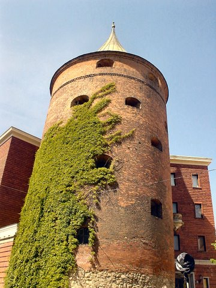
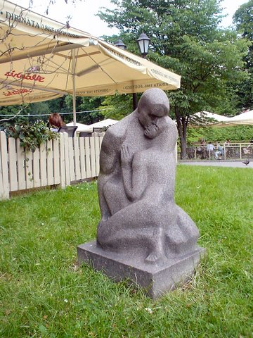
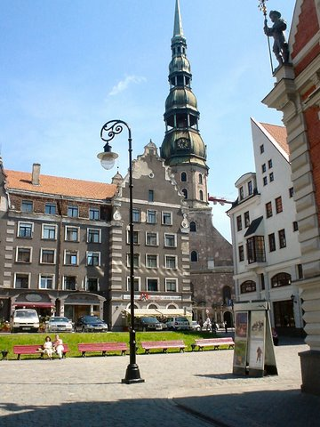
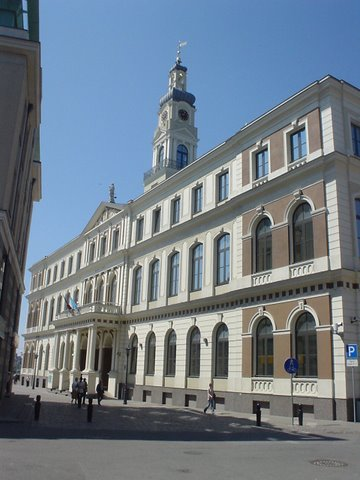
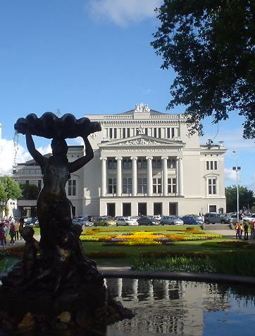
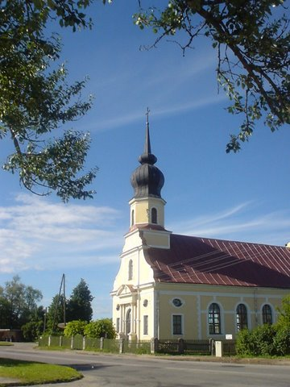

Weather outlook | Useful links | Riga news
Visiting Riga in Latvia
This article and photos are contributed by Keith Paterson, MBE*
Riga, the capital of Latvia, really amazed us for, far from being a threadbare Russian annex it has become a colourful modern city full of parks, statues and magnificent architecture.

Colourful old buildings in Riga
|

The Riga Canal
|

A flower market in Riga
|
Latvia has always been a lively trading country on the Baltic. It became prosperous when it was part of the Hanseatic League (something like the EU without the squabbles) from 1300 right up until the mid 1800's. They have done so much since the Russians left. They have come through their own austerity and are now back on track so it is understandable that they are now voting solidly against giving Greece more money. Besides, their wages and pensions are much lower than those in Greece (less than half of the Greek pension).
Riga, which stands on the broad Daugava River, really is a very attractive little city. It has its own seaside playground at nearby Jurmala, which is still a favourite with well-heeled Russians today.
After the Gorbachov Glasnost period Latvia became increasingly independent from 1989 and a few years later established its own parliament and asked the high proportion of Russians to choose between becoming Latvian ... or leave.
The Latvian language became the main one and a museum is dedicated to the "Occupation". It privatised industry and the collective farms, returning them to their owners or compensating them. In 1994 Latvia became part of the EEC and has a strong, expanding economy. As crossroads between Russia and the West it is in a fortunate position.
Riga in photos

Ancient Powder Tower, Riga
|

Latvia park statue
|

St Peter's Church, Riga
|

Municipal Building
|

Riga Opera House
|

A church in nearby Kekova
|

Bridge over the River Daugava

The House of Blackheads
|

Riga's Freedom Monument, symbol of Latvia's independence.
|
Riga is one of the cheaper cities to stay in Europe as the cost of accommodation, food and drinks are ridiculously low when compared with some European cities. The climate is pleasant during spring, summer and autumn but winters can be fairly extreme, with the sea freezing.
The Latvians are great flower givers. One sees macho-looking men walking around town with little posies to give to their girlfriends. Our girls were presented with flowers wherever they went even if they were just bunches of wild ones with grass decoration! |
 Closeup view of the façade of Riga's famous House of Blackheads building.
Closeup view of the façade of Riga's famous House of Blackheads building.
|
 The Central Market near Riga's main railway station.
The Central Market near Riga's main railway station.
|
Day trip to Jurmala
You can easily get to Jurmala by train from Riga. The train ride to Majori, its most popular stop for tourists, takes about half an hour. The Jurmala resort is still popular with Russians. One rich dissident hit the headlines some years back when he disappeared from his dacha and hasn't been seen since!
Go to this page for full information on tourists' attractions in Jurmala as well as full details on how to get there by train or minibus. You will also find two other useful and informative links to Jurmala in the list below.
 
Statue of a turtle at Jurmala beach (left). A dacha, or country house, in Jurmala (right).
 
*Keith Paterson, of Newmarket, England is the webmaster of Silverhairs.
|